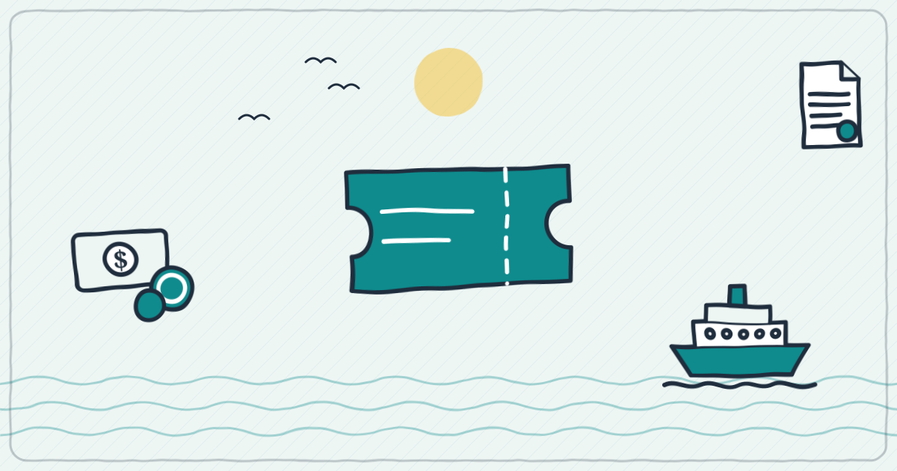

The Cruise Line Cancelled My Sailing. Now What?

You get a full refund of everything paid to the cruise line, or the choice of a future cruise credit that is often worth more than you paid. The line does not cover flights, hotels or cars you booked yourself; that gap is filled only by flexible fares, goodwill payments from the line, or travel insurance that lists supplier cancellation.
When a cruise line pulls a sailing, the money you paid the line comes back to you. That is the reliable part: a full refund to your original payment method, or an alternative future cruise credit usually sweetened with a bonus. The unreliable part is everything you arranged around the cruise, because the line has no duty to cover a flight from Calgary or a hotel in Fort Lauderdale that you booked directly.
Why would a cruise line cancel a whole sailing?
Outright cancellations are rare compared with the number of cruises that sail, and they tend to come from a short list:
Mechanical or technical problems that force an unscheduled drydock are the most common, often announced a few weeks out. Charters come next: a company or group buys the entire ship for your dates and individual bookings are cancelled, sometimes a year ahead. A ship can also be redeployed to another region or sold to another brand.
Weather is the short-notice one. A hurricane parked over Galveston or Port Canaveral can cancel with 48 hours' warning. Port closures and public health orders are rarer but bigger: Canada's closure of its waters to large ships in 2020 and 2021 erased two full Alaska seasons from Vancouver.
Charters and redeployments give you months. Weather and breakdowns give you days, which is when the flight problem bites hardest.
What does the cruise line owe me?
Terms vary by line and by cause, so read your own notice, but the pattern is consistent across the major lines.
| Situation | You normally receive | You normally do not receive |
|---|---|---|
| Whole sailing cancelled | Full refund of fare and prepaid extras, or a future cruise credit, often 110–125% | Your own flights, hotels, parking or car rental |
| Sailing shortened by days | Pro-rated refund or credit for the lost days | Missed-connection costs |
| Embarkation port changed | Transport between ports, or a refund if you decline | New flights to a distant alternative port, unless offered |
| Port skipped or swapped | Port fees for that stop, sometimes onboard credit | Any part of the cruise fare |
| Ship excursion cancelled | Refund to onboard account or card | Independent tours you booked elsewhere |
Prepaid items bought through the line, including drink and wifi packages, specialty dining, gratuities, excursions and cruise line air, are refunded along with the fare. Refunds to a credit card commonly take several weeks and longer when many sailings are cancelled at once.
Refund or future cruise credit?
The credit is often worth more on paper, and lines offer it to keep your business. Before you accept it, check four things: the expiry date, whether it can be applied to taxes and port fees, whether it is tied to the named guests, and whether any unused balance is lost. If you already planned another cruise with the line, the bonus is real money. If you are not sure, take the refund.
What happens to flights and hotels I booked myself?
This is where travellers lose money. If the line sold you the flights, it rebooks or refunds them. If you bought your own on Air Canada, WestJet, Delta or United, the line has no obligation, which is the strongest argument for cruise line air.
What you recover depends on the fare class. Flexible fares refund in full. Standard economy typically converts to an airline credit with a change fee or a cancellation charge. Basic economy on either side of the border may return almost nothing. Hotels on refundable rates cancel in a click; prepaid rates usually do not, though a polite call explaining a cancelled cruise sometimes works.
Some cancellation notices include a goodwill offer to reimburse airline change fees or non-refundable costs up to a cap, with receipts. Read the notice completely before calling the airline, so you know what paperwork to collect.
Does travel insurance cover a cruise line cancellation?
Only if the policy says so. Look in the trip cancellation section for "default", "cessation of operations" or "cancellation by the travel supplier" as covered reasons. Many policies cover the airline and hotel losses that the cruise refund leaves behind, but some pay nothing if the supplier itself refunds the fare, on the logic that you were made whole. Buy insurance when you pay the deposit, since the supplier-related benefits often require purchase within a set window of the first payment. The clauses worth reading before you buy are set out in cruise travel insurance for Canadians.
What should I do the day the notice arrives?
- Read the whole notice, including the deadline for choosing refund or credit and the default if you do not reply.
- Note any offer towards flights, hotels or change fees, and the proof the line wants.
- Call the airline and hotel before the deadline on their own rules, keeping every receipt and confirmation.
- File an insurance claim if your policy might respond, attaching the written cancellation.
- Diarise the refund date the line quoted and follow up the day after it passes.
- If you booked through a travel agent, hand them all of the above; it is their job.
If you booked for a group, tell everyone the same day so each household can act within its own airline deadlines. The arrangements in organising dinner for a big group will need redoing for the new sailing too.
Itinerary changes are the real everyday risk
Full cancellations make headlines, but most cruise disruptions are port changes. The contract of carriage lets the ship skip a stop for weather, sea state, mechanical limits or a port closure. In Alaska, ice can close a fjord and the ship swaps glaciers. In the Caribbean, a storm reroutes a Western itinerary to Eastern ports with a day's notice. You sail, you enjoy different ports, and you receive the unused port fees. Nobody owes you a new cruise.
Plan around that reality: fly in the day before, keep excursions flexible, and treat the itinerary as a strong intention rather than a promise. The cruise terms glossary decodes the notice, and if a replacement sailing leaves from Florida, the Toronto to Miami planner covers rebooking the flight.
Want this checked for your own sailing? A licensed cruise consultant can price it up and answer questions for free, with no obligation.
Ask a cruise expert →Protecting the next booking
Deposit on a credit card, insurance bought the same week, flexible or cruise line air where the price gap is small, and a hotel on a refundable rate. Then a cancellation becomes a refund and a free rebook, not a lost winter holiday. When you rebook, ask whether a military, veteran or senior rate applies to the replacement sailing; the protected fare you are offered is not always the lowest one. The reverse case, where you are the one who can no longer sail, is a different story: being refused at the terminal for something like the 24-week pregnancy limit counts as your cancellation, with no refund, and so does falling ill at the last minute, which is why getting sick the day before a cruise is an insurance matter rather than a refund one.
Questions people also ask
Should I take the refund or the future cruise credit?
Take the credit only if you are confident you will sail with that line before it expires, and read whether it covers taxes and fees. A 125% credit is a genuine bonus for a repeat cruiser; for anyone unsure, cash keeps every option open and earns no expiry date.
Will the cruise line pay for my non-refundable flights?
Not as a rule. Some cancellation notices offer to reimburse airline change fees up to a cap with receipts, and flights bought through the line are refunded or rebooked. Flights you booked yourself depend on the airline's fare rules and your insurance.
Is a skipped port the same as a cancelled cruise?
No. A skipped or swapped port is an itinerary change, which the cruise contract allows for weather, safety or operations. You usually receive the unused port fees for that stop and occasionally a goodwill onboard credit, but no fare refund.